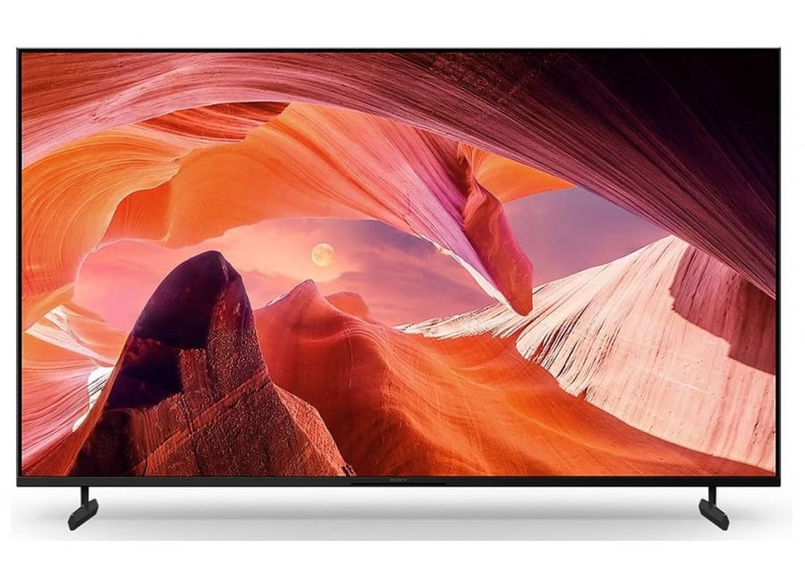

Sony KD-55X80L
3149 ₾

ზოგადი ინფორმაცია
შეთავაზება:
სპეციალური შეთავაზება
ბრენდი:
Sony
მოდელი/PN:
KD-55X80L
ტიპი:
Android TV
სმარტი:
დიახ
ეკრანი
დიაგონალი:
55"
გარჩევადობა:
3840 x 2160 (4K)
ეკრანის/პანელის ტიპი :
LCD
განათება:
Direct LED
განახლების სიხშირე:
50 Hz
HDR მხარდაჭერა:
დიახ
მოძრაობის დიაპაზონი:
60
ცოცხალი ფერი:
დიახ
TRILUMINOS:
დიახ
HEVC მხარდაჭერა:
დიახ
HLG (Hybrid Log Gamma):
დიახ
დაბნელების ტიპი:
Frame dimming
HDR სიკაშკაშის გამაძლიერებელი:
დიახ
გამოსახულების პროცესორი:
X1 4K HDR Processor
Dolby Vision:
დიახ
სათამაშო რეჟიმი:
დიახ
ფილმის რეჟიმი:
დიახ
მეხსიერება
შიდა მეხსიერება:
32 GB
ხმის მახასიათებლები
ჩაშენებული დინამიკები:
დიახ
სპიკერების რაოდენობა:
2
სპიკერის სიმძლავრე:
10W x 2
Dolby Atmos:
დიახ
DTS Digital Surround:
დიახ
ტიუნერი
ანალოგური ტუნერი:
დიახ
DVB-C:
დიახ
DVB-T:
დიახ
DVB-T2:
დიახ
DVB-S:
დიახ
DVB-S2:
დიახ
სმარტ TV-ის ფუნქციები
ინტერნეტ ბრაუზერი:
დიახ
აპლიკაციები:
დიახ
Google Play Store:
დიახ
ინტერფეისი
HDMI:
4
USB:
2
3.5 მმ აუდიო ჯეკი:
1
RJ-45 (LAN):
1
HDMI-CEC:
დიახ
ოპტიკური აუდიო:
1
RF (ანტენა):
1
RF (სატელიტის შეყვანა):
1
USB ვიდეო / აუდიო / ფოტო
ვიდეო:
დიახ
აუდიო:
დიახ
ფოტო:
დიახ
ჩაწერა:
დიახ
დაკავშირების შესაძლებლობა
Wi-Fi:
დიახ
Bluetooth:
დიახ
დისტანციური მართვა
დისტანციური მართვა:
დიახ
კედლის საკიდი
კედელზე დამონტაჟება:
VESA 300 x 300
სამუშაო სისტემა
ოპერაციული სისტემა:
Android TV
ფერი
ფერი:
შავი
ზომები
ზომები სადგამთან ერთად:
1233 x 785 x 336 mm
ზომები სადგამის გარეშე:
1233 x 713 x 72 mm
წონა
წონა სადგამით:
17 კგ
წონა სადგამის გარეშე:
15.9 კგ
გარანტია
გარანტია ფიზიკური პირისთვის:
24 თვე
view this TV here:Link